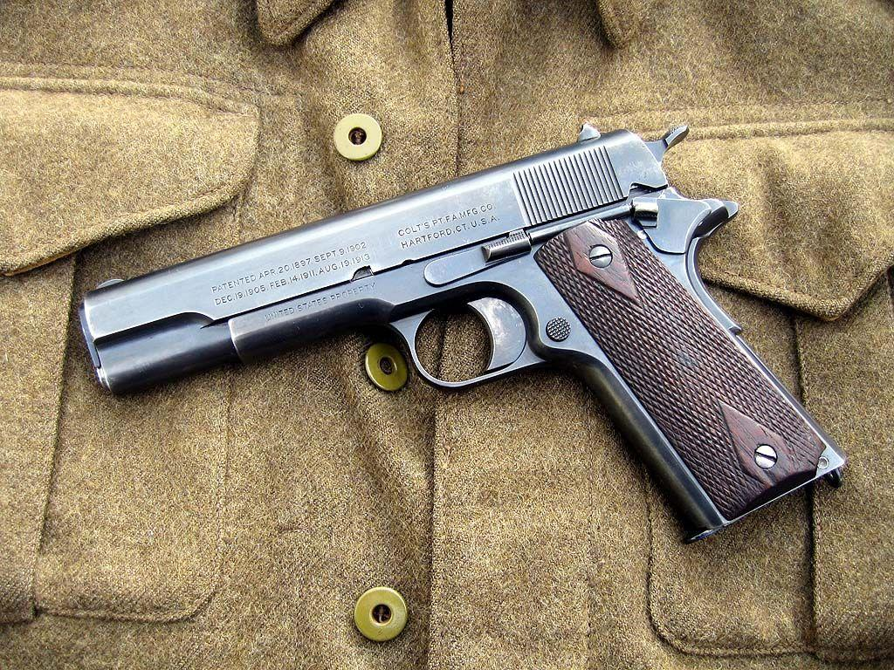
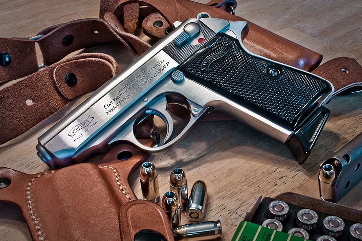
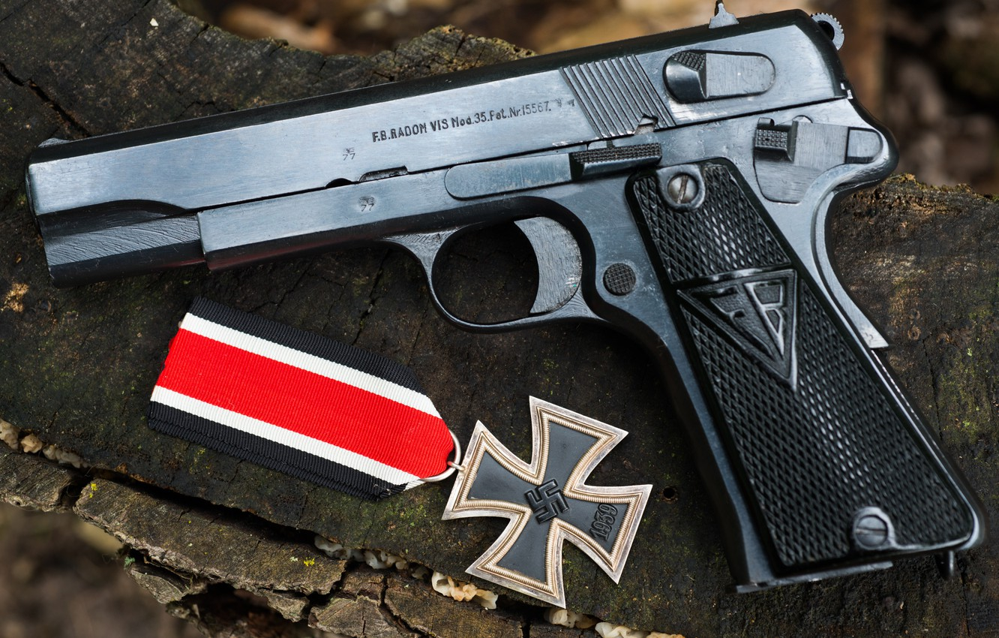
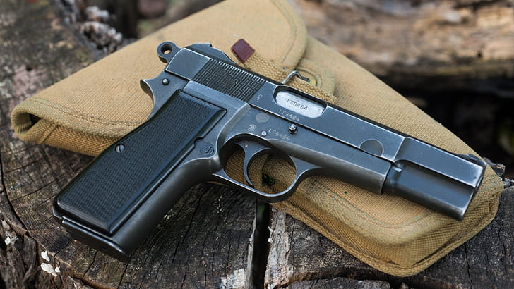
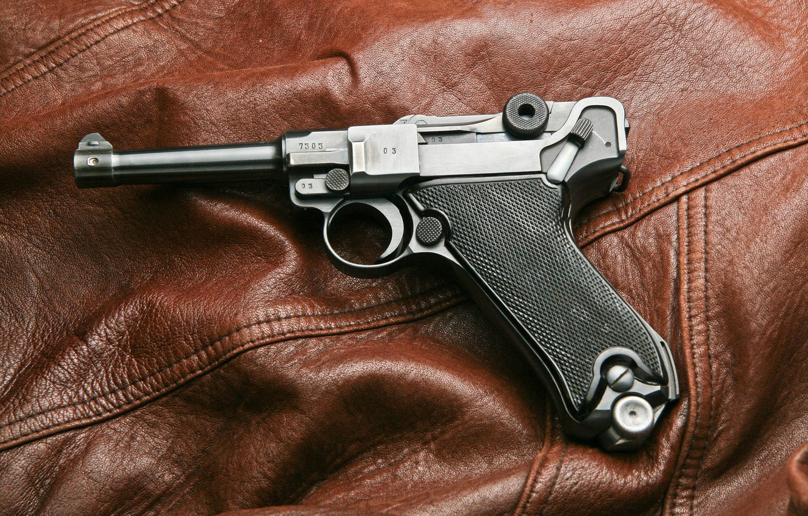
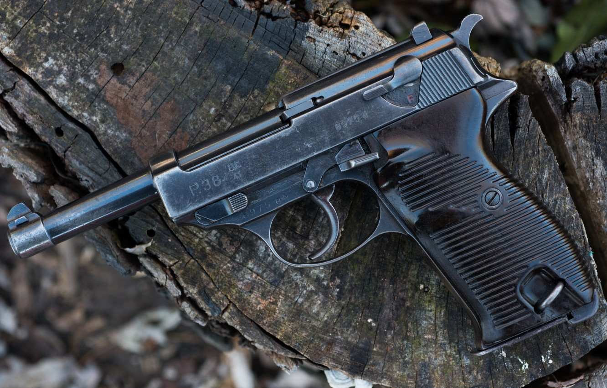

The most famous WW2 firearms in the world
Handguns
Colt 1911
This colt is simply an icon of all weapons, today its construction has been around for over 100 years, and it is still manufactured today, there have been a few design changes, but it is basically the same thing. Designed by John Browning, the M1911 is the best-known of his designs to use the short recoil principle in its basic design. The pistol was widely copied, and this operating system rose to become the preeminent type of the 20th century and of nearly all modern centerfire pistols. It is popular with civilian shooters in competitive events such as USPSA, IDPA, International Practical Shooting Confederation, and bullseye shooting. Compact variants are popular civilian concealed carry weapons in the U.S. because of the design's relatively slim width and the stopping power of the .45 ACP cartridge.
Walther PPK
The original PP was released in 1929. It was designed for police use and was used by police forces in Europe in the 1930s and later. The semi-automatic pistol operated using a simple blowback action. The PP was designed with several safety features, some of them innovative, including an automatic hammer block, a combination safety/decocker and a loaded chamber indicator. All members of the PP series share a common takedown procedure. The trigger guard is hinged; by pulling the trigger guard downwards, the slide can be drawn backwards past the normal stopping point, lifted clear of the slide rail, and then guided back forward to clear the barrel. With the slide removed the blowback spring around the barrel is free and can be removed as well.
Radom Vis wz.35

The Radom wz.35 was a combination of Browning and Colt design features with a few local Polish touches. In operation and use it was entirely con- ventional, but it lacked an applied safety and used only a grip safety, what appeared to be the applied safety catch on the left-hand side of the receive being only a catch used when stripping the pistol. The ammunition used was the 9-mm Parabellum, but firing this rather powerful round from the Radom was no great problem as the bulk and weight of the pistol was such that the firing stresses were
Browning High Power
The Browning HP may be regarded as one of the most successful pistol de- signs ever produced. Not only is it still in widespread service, in numbers that must surely exceed those of all other types combined, but it has also been produced at many locations in many countries. It was one of the last weapon designs produced by John Browning before he died in 1925, but it was not until 1935 that the HP was placed in production by FN at Liège. From this derives the name which is generally given as the HP (High Power) or Pistole Automatique Browning GP 35 (Grand Puissance modèle 1935). Numerous versions may be encoun- tered, but they all fire the standard 9-mm Parabellum cartridge.
Luger P08
The pistol that is now generally, but misleadingly, known as the Luger had its design origins in a pistol design first produced in 1893 by one Hugo Borchardt. A George Luger further developed this design and produced the weapon that bears his name to this day. The first Lugers were manufactured in 7.65-mm (0.301-in) calibre and were adopted by the Swiss army in 1900, Thereafter the basic design was adopted by many nations and the type is still to be encountered, for by now well over two million have been produced by various manufacturers and at least 35 main variants are known to exist, together with a host of subvariants. The Pistole P 08 was one of the main variants. It was taken into German army service in 1908 (hence the 08) and remained the standard German service pistol until the Walther P 38 was introduced in 1938.
Walther P38

The Walther P 38 was developed primarily to replace the P 08, which was an excellent weapon but expensive to produce. After the National Socialists came to power in Germany in 1933 they decided upon a deliberate pro- gramme of military expansion into which the old P 08 could not fit. What was wanted was a pistol that could be quickly and easily produced but one that embodied all the many and va- rious design features such as a handcocked trigger and improved safeties that were then becoming more com- mon. Walther eventually received the contract for this new pistol in 1938, but only after a long programme of de- velopment.
